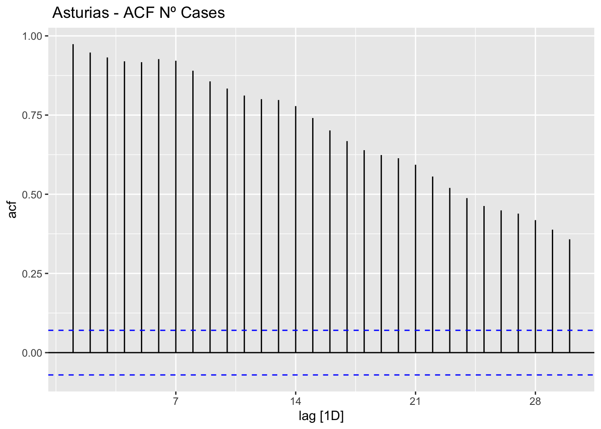
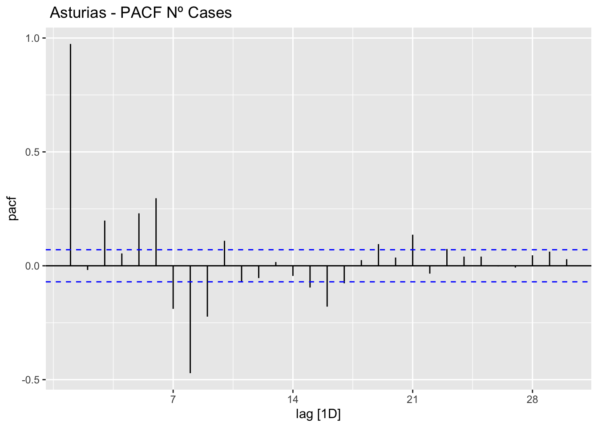
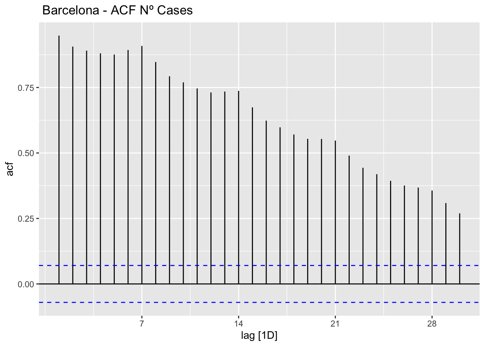
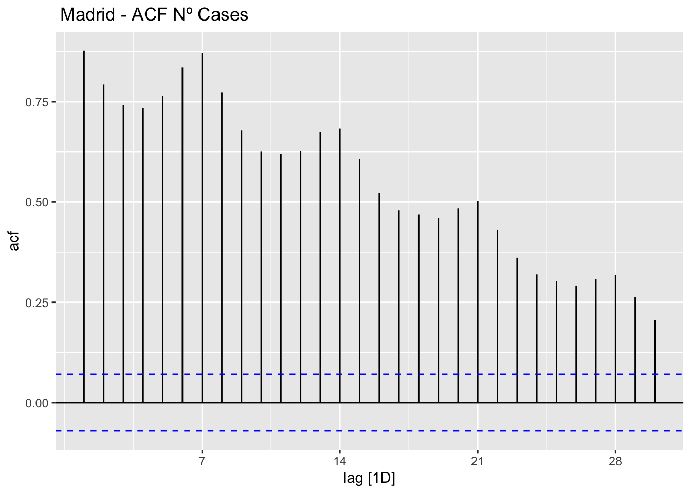
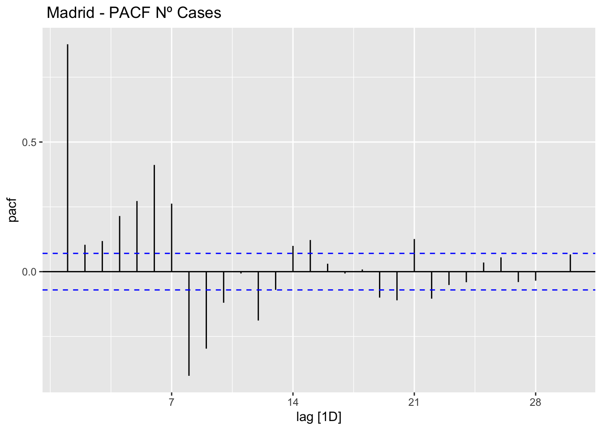
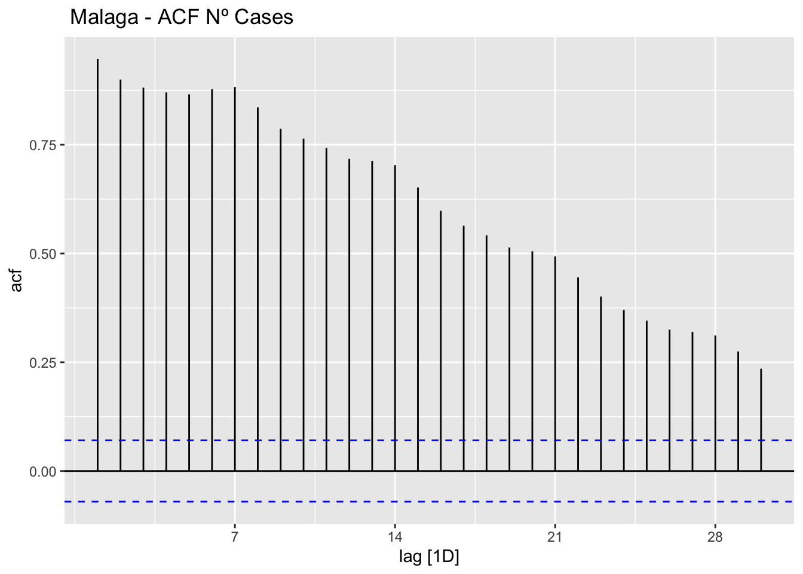
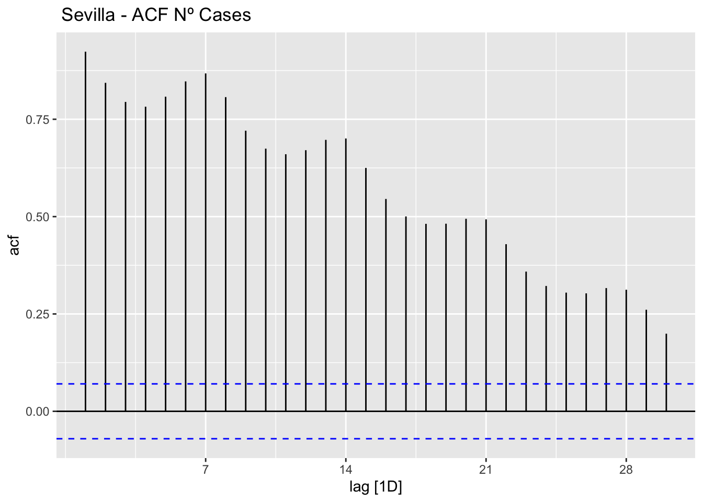

pacman::p_load(
here, # file locator
tidyverse, # data management and ggplot2 graphics
skimr, # get overview of data
janitor, # produce and adorn tabulations and cross-tabulations
tsibble,
fable,
feasts
)
covid_data <- readRDS(here("data", "clean", "final_covid_data.rds"))ACF and PACF plots
Load packages and data:
Asturias
data_asturias <- covid_data %>%
filter(provincia == "Asturias") %>%
select(provincia, fecha, num_casos, num_hosp, tmed,mob_grocery_pharmacy, mob_parks,
mob_residential, mob_retail_recreation, mob_transit_stations, mob_workplaces, mob_flujo) %>%
# Drop NAs dates except for mob_flujo since the data finish in 2021 while other sources are ut to 31/03/2022
drop_na(-mob_flujo) %>%
as_tsibble(key = provincia, index = fecha)
data_asturias# A tsibble: 774 x 12 [1D]
# Key: provincia [1]
provincia fecha num_casos num_hosp tmed mob_grocery_pharmacy mob_parks
<chr> <date> <dbl> <dbl> <dbl> <dbl> <dbl>
1 Asturias 2020-02-15 0 0 12.2 -1 20
2 Asturias 2020-02-16 0 0 16.2 1 11
3 Asturias 2020-02-17 0 2 9.8 0 -13
4 Asturias 2020-02-18 0 0 8.8 1 11
5 Asturias 2020-02-19 0 0 8.6 1 29
6 Asturias 2020-02-20 0 0 9.9 0 32
7 Asturias 2020-02-21 0 0 11.2 -1 18
8 Asturias 2020-02-22 0 0 10.5 1 29
9 Asturias 2020-02-23 1 0 9.2 6 23
10 Asturias 2020-02-24 0 0 8.6 5 48
# … with 764 more rows, and 5 more variables: mob_residential <dbl>,
# mob_retail_recreation <dbl>, mob_transit_stations <dbl>,
# mob_workplaces <dbl>, mob_flujo <dbl># ACF
data_asturias %>%
ACF(num_casos, lag_max = 30) %>%
autoplot() +
labs(title=" Asturias - ACF Nº Cases")
# PACF
data_asturias %>%
PACF(num_casos, lag_max = 30) %>%
autoplot() +
labs(title=" Asturias - PACF Nº Cases")
Barcelona
data_barcelona <- covid_data %>%
filter(provincia == "Barcelona") %>%
select(provincia, fecha,num_casos, num_hosp, tmed, mob_grocery_pharmacy, mob_parks,
mob_residential, mob_retail_recreation, mob_transit_stations, mob_workplaces, mob_flujo) %>%
# Drop NAs dates except for mob_flujo since the data finish in 2021 while other sources are ut to 31/03/2022
drop_na(-mob_flujo) %>%
as_tsibble(key = provincia, index = fecha)
data_barcelona# A tsibble: 774 x 12 [1D]
# Key: provincia [1]
provincia fecha num_casos num_hosp tmed mob_grocery_pharmacy mob_parks
<chr> <date> <dbl> <dbl> <dbl> <dbl> <dbl>
1 Barcelona 2020-02-15 12 4 12.8 -3 14
2 Barcelona 2020-02-16 2 4 14.5 -8 2
3 Barcelona 2020-02-17 1 5 14.6 1 11
4 Barcelona 2020-02-18 5 7 11.5 1 8
5 Barcelona 2020-02-19 1 8 11.8 1 6
6 Barcelona 2020-02-20 11 10 10.4 1 9
7 Barcelona 2020-02-21 15 8 11.9 -1 11
8 Barcelona 2020-02-22 8 10 12 -1 25
9 Barcelona 2020-02-23 7 8 12.9 0 26
10 Barcelona 2020-02-24 8 4 13.6 1 21
# … with 764 more rows, and 5 more variables: mob_residential <dbl>,
# mob_retail_recreation <dbl>, mob_transit_stations <dbl>,
# mob_workplaces <dbl>, mob_flujo <dbl># ACF
data_barcelona %>%
ACF(num_casos, lag_max = 30) %>%
autoplot() +
labs(title=" Barcelona - ACF Nº Cases")
data_barcelona %>%
PACF(num_casos, lag_max = 30) %>%
autoplot() +
labs(title=" Barcelona - PACF Nº Cases")Madrid
data_madrid <- covid_data %>%
filter(provincia == "Madrid") %>%
select(provincia, fecha, num_casos, num_hosp, tmed, mob_grocery_pharmacy, mob_parks,
mob_residential, mob_retail_recreation, mob_transit_stations, mob_workplaces, mob_flujo) %>%
# Drop NAs dates except for mob_flujo since the data finish in 2021 while other sources are ut to 31/03/2022
drop_na(-mob_flujo) %>%
as_tsibble(key = provincia, index = fecha)
data_madrid# A tsibble: 774 x 12 [1D]
# Key: provincia [1]
provincia fecha num_casos num_hosp tmed mob_grocery_pharmacy mob_parks
<chr> <date> <dbl> <dbl> <dbl> <dbl> <dbl>
1 Madrid 2020-02-15 13 4 8.6 -2 31
2 Madrid 2020-02-16 13 2 9.6 4 34
3 Madrid 2020-02-17 19 9 9.1 3 10
4 Madrid 2020-02-18 14 13 8.5 1 11
5 Madrid 2020-02-19 12 14 8.6 1 18
6 Madrid 2020-02-20 25 15 8 1 18
7 Madrid 2020-02-21 26 18 10.4 1 22
8 Madrid 2020-02-22 29 8 10.8 -1 53
9 Madrid 2020-02-23 44 8 11.6 6 56
10 Madrid 2020-02-24 56 18 10.8 6 35
# … with 764 more rows, and 5 more variables: mob_residential <dbl>,
# mob_retail_recreation <dbl>, mob_transit_stations <dbl>,
# mob_workplaces <dbl>, mob_flujo <dbl># ACF
data_madrid %>%
ACF(num_casos, lag_max = 30) %>%
autoplot() +
labs(title=" Madrid - ACF Nº Cases")
# PACF
data_madrid %>%
PACF(num_casos, lag_max = 30) %>%
autoplot() +
labs(title=" Madrid - PACF Nº Cases")
Málaga
data_malaga <- covid_data %>%
filter(provincia == "Málaga") %>%
select(provincia, fecha, num_casos, num_hosp, tmed, mob_grocery_pharmacy, mob_parks,
mob_residential, mob_retail_recreation, mob_transit_stations, mob_workplaces, mob_flujo) %>%
# Drop NAs dates except for mob_flujo since the data finish in 2021 while other sources are ut to 31/03/2022
drop_na(-mob_flujo) %>%
as_tsibble(key = provincia, index = fecha)
data_malaga# A tsibble: 774 x 12 [1D]
# Key: provincia [1]
provincia fecha num_casos num_hosp tmed mob_grocery_pharmacy mob_parks
<chr> <date> <dbl> <dbl> <dbl> <dbl> <dbl>
1 Málaga 2020-02-15 1 0 13.5 0 29
2 Málaga 2020-02-16 0 0 14 4 16
3 Málaga 2020-02-17 0 0 17.1 1 14
4 Málaga 2020-02-18 0 0 15.4 0 -1
5 Málaga 2020-02-19 0 2 15.9 0 -1
6 Málaga 2020-02-20 1 0 14.9 1 13
7 Málaga 2020-02-21 3 2 13.6 -1 3
8 Málaga 2020-02-22 2 1 14.2 -1 25
9 Málaga 2020-02-23 2 0 13.2 10 15
10 Málaga 2020-02-24 2 1 14 0 22
# … with 764 more rows, and 5 more variables: mob_residential <dbl>,
# mob_retail_recreation <dbl>, mob_transit_stations <dbl>,
# mob_workplaces <dbl>, mob_flujo <dbl># ACF
data_malaga %>%
ACF(num_casos, lag_max = 30) %>%
autoplot() +
labs(title=" Malaga - ACF Nº Cases")
# PACF
data_malaga %>%
PACF(num_casos, lag_max = 30) %>%
autoplot() +
labs(title=" Malaga - PACF Nº Cases")Sevilla
data_sevilla <- covid_data %>%
filter(provincia == "Sevilla") %>%
select(provincia, fecha, num_casos, num_hosp, tmed, mob_grocery_pharmacy, mob_parks,
mob_residential, mob_retail_recreation, mob_transit_stations, mob_workplaces, mob_flujo) %>%
# Drop NAs dates except for mob_flujo since the data finish in 2021 while other sources are ut to 31/03/2022
drop_na(-mob_flujo) %>%
as_tsibble(key = provincia, index = fecha)
data_sevilla# A tsibble: 774 x 12 [1D]
# Key: provincia [1]
provincia fecha num_casos num_hosp tmed mob_grocery_pharmacy mob_parks
<chr> <date> <dbl> <dbl> <dbl> <dbl> <dbl>
1 Sevilla 2020-02-15 0 1 15.9 -5 34
2 Sevilla 2020-02-16 0 0 15.3 1 15
3 Sevilla 2020-02-17 0 0 16.1 0 14
4 Sevilla 2020-02-18 1 1 17.4 -1 16
5 Sevilla 2020-02-19 0 1 15.9 0 14
6 Sevilla 2020-02-20 1 1 16 -1 13
7 Sevilla 2020-02-21 0 0 15.8 -1 18
8 Sevilla 2020-02-22 0 0 16.6 -2 33
9 Sevilla 2020-02-23 0 0 16.2 5 20
10 Sevilla 2020-02-24 2 0 16.3 1 23
# … with 764 more rows, and 5 more variables: mob_residential <dbl>,
# mob_retail_recreation <dbl>, mob_transit_stations <dbl>,
# mob_workplaces <dbl>, mob_flujo <dbl># ACF
data_sevilla %>%
ACF(num_casos, lag_max = 30) %>%
autoplot() +
labs(title=" Sevilla - ACF Nº Cases")
# PACF
data_sevilla %>%
PACF(num_casos, lag_max = 30) %>%
autoplot() +
labs(title=" Sevilla - PACF Nº Cases")